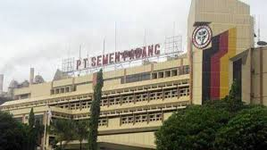

Perekonomian
Secara bertahap perekonomian Sumatera Barat mulai bergerak positif setelah mengalami tekanan akibat dampak gempa bumi tahun 2009 yang melanda kawasan tersebut. Dampak bencana ini terlihat pada triwulan IV-2009, di mana pertumbuhan ekonomi hanya mencapai 0,90%. Namun kini perekonomian Sumatera Barat telah membaik, dengan tingkat pertumbuhan di atas rata-rata nasional. Pada tahun 2012 ekonomi Sumatera Barat tumbuh sebesar 6,35%, lebih baik dibandingkan tahun sebelumnya yang hanya sebesar 6,25%. Dan pada triwulan I-2013 perekonomian Sumatera Barat telah tumbuh mencapai 7,3%. Tingginya pertumbuhan ekonomi Sumatera Barat dalam tiga tahun terakhir, telah menurunkan tingkat kemiskinan di provinsi ini dari 8,99% (2011) menjadi 8% (2012). Untuk Pendapatan Domestik Regional Bruto (PDRB), pada tahun 2012 provinsi ini memiliki PDRB mencapai Rp 110,104 triliun, dengan PDRB per kapita sebesar Rp 22,41 juta.
Tenaga Kerja
Seiring dengan bertumbuhnya perekonomian Sumatera Barat, maka jumlah tenaga kerja yang diperlukan semakin bertambah pula. Hal ini telah mendorong turunnya akan pengangguran di provinsi ini. Sepanjang Februari 2011-Februari 2012, jumlah penduduk yang menganggur mengalami penurunan dari 162.500 orang menjadi 146.970 orang. Tingkat pengangguran terbuka (TPT) menurun dari 7,14% menjadi 6,25%. Angka tersebut berada dibawah rata-rata nasional pada periode akhir 2011 yang mencapai 6,56%. Pada Februari 2012, jumlah angkatan kerja Sumatera Barat mencapai 2.204.218 orang, bertambah 90.712 orang dibandingkan dengan jumlah angkatan kerja pada Februari 2011.
Sebagian besar penduduk yang bekerja terserap di sektor pertanian. Lapangan pekerjaan di sektor ini mampu menyerap 42,4% dari tenaga kerja yang ada. Namun, persentase penyerapan ini makin menurun dibandingkan tahun sebelumnya yang sebesar 44%. Sementara itu, persentase penduduk bekerja yang terserap di sektor perdagangan kembali meningkat, dari sebelumnya 18,5% pada Februari 2011 menjadi 19,8% pada Februari 2012. Demikian pula penyerapan di sektor jasa mengalami kenaikan, dari 16,7% menjadi 17,4%.
Pertanian
Pada triwulan IV-2012, sektor pertanian mengalami pertumbuhan relatif tinggi, didorong oleh menggeliatnya subsektor tanaman bahan makanan. Di triwulan ini pertumbuhan sektor pertanian mencapai 4,14%, lebih tinggi dibandingkan triwulan sebelumnya sebesar 2,05%. Kinerja sektor perkebunan yang cukup baik pada tahun 2012, telah menopang pertumbuhan industri pertanian sebesar 4,07%.
Industri Pengolahan

Industri Sumatera Barat didominasi oleh industri skala kecil atau rumah tangga. Jumlah unit industri sebanyak 47.819 unit, terdiri dari 47.585 unit industri kecil dan 234 unit industri besar menengah, dengan perbandingan 203 : 1. Pada tahun 2001 investasi industri besar menengah mencapai Rp 3.052 miliar, atau 95,60% dari total investasi, sedangkan industri kecil investasinya hanya Rp. 1.412 miliar atau 4,40% saja dari total investasi. Nilai produksi industri besar menengah tahun 2001 mencapai Rp. 1.623 miliar, yaitu 60 % dari total nilai produksi, dan nilai produksi industri kecil hanya mencapai Rp. 1.090 miliar, atau 40% dari total nilai produksi.
Untuk industri pengolahan semen, pada tahun 2012 Sumatera Barat telah memproduksi sebanyak 6.522.006 ton, lebih tinggi dibandingkan tahun lalu yang hanya sebesar 6.151.636 ton. Sementara volume penjualannya pada tahun 2012 sebesar 6.845.070 ton, meningkat 10,20 % dibandingkan tahun lalu yang sebesar 6.211.603 ton.
Jasa
Kembali bergeraknya perekonomian Sumatera Barat pasca gempa serta semakin pulihnya perekonomian global terutama zona Sumatera bagian tengah juga merupakan faktor pendorong bergeraknya kembali sektor jasa (7,38%). Sektor jasa yang cukup penting di provinsi ini adalah keuangan, hotel, restoran, dan agen perjalanan. Pertumbuhan hotel di Sumatera Barat dalam tiga tahun terakhir cukup pesat. Hal ini seiring dengan meningkatnya jumlah wisatawan yang datang ke provinsi ini. Selama tahun 2012 terdapat 36.623 wisatawan mancanegara yang berkunjung ke Sumatera Barat, atau meningkat 8,27% dibandingkan tahun lalu yang sebanyak 33.827 wisatawan.
Pertambangan
Sumatera Barat memiliki potensi bahan tambang golongan A, B dan C. Bahan tambang golongan A, yaitu batu bara terdapat di kota Sawahlunto. Sedangkan Bahan tambang golongan B yang terdiri dari air raksa, belerang, pasir besi, tembaga, timah hitam dan perak menyebar di wilayah kabupaten Sijunjung, Dharmasraya, Solok, Solok Selatan, Lima Puluh Kota, Pasaman, dan Tanah Datar. Bahan tambang golongan C menyebar di seluruh kabupaten dan kota, sebagian besar terdiri dari pasir, batu dan kerikil.
Keuangan & Perbankan
Perkembangan berbagai indikator perbankan pada triwulan IV-2012, menunjukkan perbaikan seiring dengan pemulihan kondisi ekonomi pasca gempa. Pada tahun 2012, total aset bank umum di provinsi ini mencapai Rp 40,1 triliun dengan nilai penyaluran kredit oleh bank umum sebesar Rp 33,8 triliun. Sedangkan total aset BPR di provinsi ini mencapai Rp 1,53 triliun dengan nilai penyaluran kredit oleh bank tersebut sebesar Rp 1,03 triliun.
Transportasi
Transportasi dari dan ke Sumatera Barat saat ini dihubungkan oleh Bandar Udara Internasional Minangkabau dan Pelabuhan Teluk Bayur. Bandar Udara Minangkabau mulai aktif beroperasi pada akhir tahun 2005 menggantikan Bandar Udara Tabing. Bandar udara ini terhubung dengan berbagai kota utama di Indonesia, seperti Jakarta, Medan, Batam, Bandung, serta Kuala Lumpur di Malaysia. Untuk meningkatkan aksebilitas Bandar Udara Minangkabau, saat ini pemerintah sedang menyiapkan kereta bandara dari dan menuju pusat kota Padang.
Selain Teluk Bayur, transportasi laut untuk jarak dekat berpusat di Pelabuhan Muara. Pelabuhan ini antara lain juga melayani transportasi menuju Kepulauan Mentawai dengan menggunakan kapal feri atau speed boat. Pelabuhan Muara juga menjadi tempat bersandar kapal-kapal pesiar (yacht) dan kapal-kapal nelayan.
Untuk transportasi antar kota, saat ini dilayani oleh bus-bus AKDP dan AKAP serta travel. Di Padang, angkutan umum berpusat di Terminal Bingkuang Air Pacah. Di Bukittinggi berpusat di Terminal Aua Kuniang, Payakumbuh berpusat di Terminal Koto Nan Ampek, dan Solok berpusat di Terminal Bareh Solok.
Transportasi darat lainnya, kereta api masih digunakan untuk jalur dari Padang ke Sawahlunto, yang melalui Padang Panjang dan Solok. Pada jalur ini, kereta api hanya dipergunakan sebagai sarana pengangkutan batubara. Sedangkan dari Padang menuju Pariaman, saat ini masih digunakan untuk angkutan penumpang.
Pariwisata
Sumatera Barat merupakan salah satu tujuan utama pariwisata di Indonesia. Fasilitas wisatanya yang cukup baik, serta sering diadakannya berbagai festival dan even internasional, menjadi pendorong datangnya wisatawan ke provinsi ini. Beberapa kegiatan internasional yang diselenggarakan untuk menunjang pariwisata Sumatera Barat adalah lomba balap sepeda Tour de Singkarak, even paralayang Event Fly for Fun in Lake Maninjau, serta kejuaraan selancar Mentawai International Pro Surf Competition.
Sumatera Barat memiliki hampir semua jenis objek wisata alam seperti laut, pantai, danau, gunung, dan ngarai. Selain itu pariwisata Sumatera Barat juga banyak menjual budayanya yang khas, seperti Festival Tabuik, Festival Rendang, permainan kim, dan seni bertenun. Disamping wisata alam dan budaya, Sumatera Barat juga terkenal dengan wisata kulinernya.
Sumatera Barat memiliki akomodasi wisata, seperti hotel dan agen perjalanan yang cukup baik. Pada akhir tahun 2012, provinsi ini telah memiliki 221 hotel dengan jumlah kamar mencapai 5.835 unit. Namun hotel-hotel berbintang lima dan empat, hanya terdapat di Padang dan Bukittinggi. Sedangkan untuk agen perjalanan di bawah keanggotaan ASITA, Sumatera Barat sudah memiliki lebih dari 100 agen. Untuk melengkapi fasilitas penunjang pariwisata, pemerintah juga menyediakan kereta api wisata yang beroperasi pada waktu tertentu.
Untuk berbagai informasi serta literatur sejarah dan kebudayaan Minangkabau, wisatawan dapat memperolehnya di Pusat Dokumentasi dan Informasi Kebudayaan Minangkabau (PDIKM) yang terletak di Perkampungan Minangkabau, Padang Panjang. Di PDIKM terdapat berbagai dokumentasi berupa foto mikrograf, surat kabar, pakaian tradisional, kaset rekaman lagu daerah, dokumentasi surat-surat kepemerintahan, dan alur sejarah masyarakat Minangkabau sejak abad ke-18 hingga tahun 1980-an.